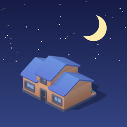

SleepHole
Sleep on time, grow a town
In the evening you start a building. The phone rests for the night. In the morning you confirm that you are up, and the building is finished. Night by night a small town grows.
SleepHole is an app for iPhone (iOS 18 or later), in English and Slovak. No account, no ads, no tracking.
Contact
Questions, a bug, an idea? Write to zrebec@zrebec.sk. Every message is read.
It helps to say which iPhone and iOS version you use and what you expected to happen.
Does the app have to stay open all night?
Yes. After the setup time SleepHole has to stay the app in front. Lock the phone as usual – the screen can be off. If you leave the app, a reminder tells you how many seconds you have to come back. Phone calls never count against you. Closing the app (swiping it away) counts as leaving it.
Tonight’s building was not finished. Why?
You were out of the app longer than the reminder allows, or the night was cancelled. The building stays as a ruin and a later good night repairs it. If you need the phone at night, use the Pause on the night screen: ten minutes, and the first one each night is free.
The reminder did not arrive during a Focus
Open iOS Settings → Notifications → SleepHole and switch on Time Sensitive Notifications. While that switch is off, the Today screen shows an orange triangle.
Will the alarm ring in silent mode?
Yes. The app’s alarm rings with the ringer switched off. On iOS 26 or later SleepHole can also set a backup system alarm that rings even if iOS closed the app during the night – allow it when the app asks.
In the morning shake the phone, or type the code from Settings → Morning confirmation.
I am ill or away
Tap “Ill or on holiday?” on the Today screen. A joker protects your streak: the bronze one is free once a month, the silver and the gold one cost coins. If you simply miss a night, this month’s bronze joker is used by itself.
I want to go to bed earlier today
From three hours before your bedtime the button reads “Go to sleep early today”. The night counts in full and your alarm stays at the usual time.
Changing bedtime and wake-up time
Settings → Schedule. Changes are free in your first seven days and on days 1–3 of every month. At any other time a change starts your streak again; buildings, coins and levels stay.
A new iPhone, or the app was reinstalled
With “Sync through iCloud” on (the default), your town comes back by itself on a device signed in to the same iCloud. You can also use Settings → Backup: “Export backup” and “Restore from backup…”.
Apple Health shows no sleep data
Switch on “Show when you fell asleep” in Settings and allow reading sleep in the question that follows. The values come from what Apple Health already knows, for example from an Apple Watch. “Read sleep again” loads them once more.
Good to know
SleepHole is not a sleep tracker and gives no medical advice.